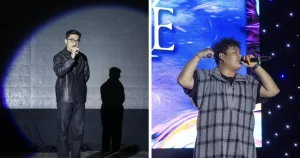

“MÓN QUÀ” TẶNG NGÀY 20/11 CỦA HỌC SINH TRƯỜNG THPT CHU VĂN AN KHIẾN HIỆU TRƯỞNG TỰ HÀO
“Các con là những ánh sao rực rỡ trong cô”, là lời chia sẻ của cô Nguyễn Thị Nhiếp, Hiệu trưởng Trường THPT Chu Văn An, quận Tây Hồ, Hà Nội khi nhắc đến học sinh của mình nhân dịp 20/11 năm nay.
Tối 18/11, Đoàn Trường THPT Chu Văn An, quận Tây Hồ, Hà Nội đã tổ chức chung kết Cuộc thi Vẻ đẹp học sinh Chu Văn An – Sparkling 2023.
Cô Nguyễn Thị Nhiếp, Hiệu trưởng Trường THPT Chu Văn An, xúc động chia sẻ: “Cô luôn nhớ những gương mặt đại diện của 8 nhà (A,C,D,M,P,T,U,V); nhớ những nụ cười, giọt mồ hôi và cả nước mắt của các em ở những buổi trưa không ngủ, những trận bóng quyết liệt cân tài cân sức và những điệu nhảy cuồng nhiệt. Điều làm cô cảm động nhất là các em cùng nhau nỗ lực, cùng nhau thi đua điểm Nhà, cùng nhau chạy trên sân cỏ, chung một điệu nhảy, hỗ trợ nhau cùng toả sáng… Các con là những “ ánh sao rực rỡ” trong cô”.
Cô Nguyễn Thị Nhiếp, Hiệu trưởng Trường THPT Chu Văn An
Nói về sự kiện được tổ chức rầm rộ suốt 1,5 tháng qua, cô Nhiếp cho biết: “115 năm với 4 mùa thay lá, bốn mùa thay hoa, thì ngôi trường thân yêu của chúng ta đã có 460 mùa dựng xây và phát triển. Trong đó đã có bao nhiêu mùa xuân hy vọng, bao mùa hạ rạng người, bao mùa thu tươi vui và bao mùa đông không giá lạnh. Chu Văn An của chúng ta còn có một mùa rất riêng đó là mùa Chu – mùa Sparkling.
Được trải nghiệm mùa Sparkling thứ 11, cô càng thích cái tên Sparkling bởi theo cô đó không chỉ là toả sáng mà đó còn là nhiều chữ S khác trên mảnh đất của Chu, trên mảnh đất Thủ đô ngàn năm văn hiến và xa hơn nữa là rất nhiều chữ S trên dải đất hình chữ S này. Cô mong các con sẽ đem theo nhiều chữ S trong hành trang trưởng thành sau mỗi mùa Sparkling. Đó là chữ S
san sẻ cùng nhau, chữ S
sung sức của tuổi trẻ, chữ S
sáng tạo không ngừng nghỉ để chữ S
sáng lấp lánh toả sáng, lung linh làm rạng danh mái trường yêu dấu của chúng ta”.
Cuộc thi Vẻ đẹp học sinh Chu Văn An – Sparkling 2023 là sự kiện thường niên của học sinh trường THPT Chu Văn An gồm chuỗi những hoạt động thú vị như Ngày hội Sportday, Fiereco Day và đặc biệt là đêm chung kết của cuộc thi được diễn ra với phần thi tài năng của 8 nhóm nhà để tìm ra nhà chiến thắng chung cuộc.
Sự kiện này thu hút hàng nghìn sự quan tâm của học sinh trong và ngoài trường từ ngày 2/10 đến nay. Sparkling trong nhiều năm qua đã khẳng định, học sinh Chu Văn An không chỉ có trí tuệ thuộc top đầu ở thủ đô mà còn rất tài năng và năng động trong ngôi trường có truyền thống trăm năm này.
Sparkling 2023 có chủ đề “The Incandescence of Stars” mang ý nghĩa là chuyến hành trình chinh phục những vì tinh tú toả sáng trên bầu trời, đem theo những khát vọng, hoài bão rực rỡ muốn chạm tới vạn vì sao. Đây cũng món quà lớn của học sinh dành tặng giáo viên nhân dịp kỷ niệm 41 năm Ngày Nhà giáo Việt Nam 20/11.
Học sinh Nhà P với tiết mục mang ý nghĩa “Mang trong mình năng lượng bí ẩn của đại dương sâu thẳm, những chú cá phương Nam sẽ cùng nhau kiên cường vượt mọi sóng gió, khẳng định bản thân”
Nhà T mang đến câu chuyện: “Dẫu thời cuộc có biến chuyển, sắc xanh của tuổi trẻ Taurus cùng khát khao được chinh phục ước mơ, niềm tin về tương lai tươi sáng sẽ luôn còn mãi”
Tiết mục của nhà U: “Trên hành trình chạm đến đỉnh cao của sự thông thái độc nhất, nhà U sẽ đồng tâm hiệp lực, phá tan muôn vàn trở ngại và cùng chinh phục thiên đỉnh rực rỡ”
Học sinh nhà V giành giải Nhất chung cuộc khi mang đến câu chuyện: “Tìm được chiếc kim chỉ nam soi đường dẫn lối, Vulpecula vươn lên trong sự đột phá mới mẻ, thắp lên những hy vọng sáng ngời, khơi nguồn cho con đường đầy hoài bão phía trước.
Nhà A với thông điệp về Chòm sao Bạch Dương
Tiết mục với nội dung học cách thấu cảm của học sinh nhà C
Học sinh nhà D với tiết mục hành trình đánh thức những chòm sao.

Chòm sao kỳ lân tỏa sáng rực rỡ là tiết mục của học sinh nhà M

Hai ca sĩ khách mời cùng khuấY động sân khấu.
Trải qua nhiều phần thi suốt 1,5 tháng, học sinh nhà V giành giải Nhất chung cuộc